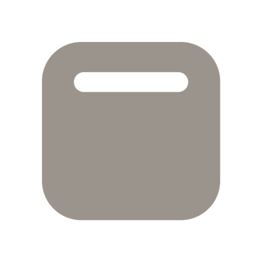

Home
Ask your workspace
Find a project, check what’s running, or pick up where you left off.
Start with a template

Connect a site
Point Radial at a marketing-site repo (Next.js, Astro, or plain HTML). Radial runs it, shows it live, and writes your edits back to the code.
Your GitHub
- Checking GitHub…
Moving off Webflow, Framer, Squarespace or another builder? Radial copies the live site into code you own, then an agent rebuilds it page by page and checks it against the original.
Build it in
Anything else from your site optional
Drop in files you already have: CMS exports, logos, fonts, brand guidelines, copy docs. The agent uses them alongside the live site.
For best results, use one of the latest frontier models at high to max effort.
Projects folder
- Point Radial at a folder to list projects in it.